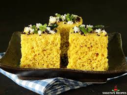
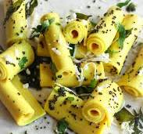
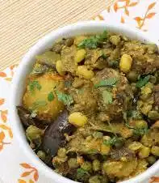

Cheese butter masala, also known as Cheese makhani, is a Punjabi dish made
with Cheese, onions, tomatoes, cashews, and spices. Here are some ingredients you might find in Cheese butter masala
Price:2000
Kaju Curry – roasted cashew nuts (kaju) cooked in a tomato, onion, and spices based
rich and creamy sauce, is a delicious restaurant style Vegetarian Punjabi Curry
Price:2000
A food dish popular in the northern areas of the Indian subcontinent. It is a combination of chana masala (spicy white chickpeas)
and bhatura/puri, a deep-fried bread made from maida.
Price:2000
Chinese
Manchuriansala
Friedrice
ChilliPaneer
Manchurian is a class of Indian Chinese
dishes made by roughly chopping and deep-frying ingredients such as chicken, cauliflower (gobi), prawns, fish, mutton, and paneer, and then sautéeing them in a sauce flavored with soy sauce.
Fried means cooked in hot oil or fat. Fried foods can be crispy, crunchy, and golden in color
use with rice and fried in oil at low and high flame to cook it well.
Price:2000
Chilli paneer is one of the most well-known dishes in Indo-Chinese cuisine.
It consists of paneer cubes battered or dusted with flour and fried before being tossed in a hot, salty, tangy, sweet.
Price:2000
Gujarati
Khandvi
KhamanDhokla
Undhyu

Manchurian is a class of Indian Chinese
dishes made by roughly chopping and deep-frying ingredients such as chicken, cauliflower (gobi), prawns, fish, mutton, and paneer, and then sautéeing them in a sauce flavored with soy sauce.
Price:2000

Khaman dhokla an authentic gujarati dish with yellow coloe and sof texture made up of baisan
price:2000

Mix vegetables speciaally for winter season and good for body and health both